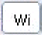

To access: in the Wi2Mi main window, View > Defect Map
The Wi2Mi Defect Map provides a graphical view of both the mask and wafer defects. It also lets you navigate and edit defects.
The Defect Map window provides a graphical view of all the defects of an inspection. Both the mask and the wafer defects are displayed in the Defect Map as shown in Figure Figure 1.
The main differences from the Calibre DefectReview Defect Map are as follows:
The icon bar’s Defect Display Mode buttons switch between mask and wafer defects. There is no way to view isolated or clustered defects.
Mask inspection defects are only shown as red empty circles.
The display also includes filled blue diamonds, which represent wafer defects.
You can right-click on the Defect Map and select the Filter option. This allows you to filter out the selected defects from the Defect Map this operation can be used. When the user filters the defects from the Defect Map the defects in the Defect List and wafer map gets updated accordingly. Once you filter out the selected defects, the Align & Correlate button in the Alignment window gets highlighted which indicates that repeatability analysis must be re-run.
You can modify the dimension of the circle or diamond depicting the defects by changing it through calibration parameter editor. Highlighted defects are still shown in cyan and the currently selected defect has a red box, as with the main Defect Map.
Control |
Description |
|---|---|
Defect Display Modes |
|
 |
Shows or hides wafer defects. |
Shows or hides mask defects. |
|
Shows common defects. Common defects are the defects that occur in the same location on both the mask and wafer. |
|
Shows non-replicated (uncommon) defects. Uncommon defects are defects which are on the mask or wafer but not both. |
|
Defect Codes |
|
Mask defects are shown as a hollow red circle. |
|
Highlighted mask defects are shown as a filled cyan circle. |
|
Wafer defects are shown as a filled blue diamond. |
|
Highlighted wafer defects are shown as a filled cyan diamond. |
|
The current defect is shown by a black box. |
|
The Defect Map shows the X and Y scale. The scale is updated with zoom, resize and scroll of the Defect Map. The defects on the Defect Map are in mask coordinate system. The unit of the scale displayed is in the units specified in the dat-in.xml file. For more details on unit configuration, refer to “Unit of Measurement Configuration”.
To select the defects on the Defect Map, refer to “Rubber Band Selection Mode”. You can perform different operations on the defects. The operations are shown on a menu, when you right click on a specific defect or a set of selected defect.
The general operations that the user can perform on the defects from the Defect Map are:
Filter — To filter out the selected defects from the Defect Map this operation can be used. When you filter defects from the Defect Map, the defects in the Defect List and Wafer Map are updated accordingly. Once you filter out the selected defects, the Align & Correlate button in the Stacking and Alignment window is highlighted, indicating that the repeatability analysis must be updated.
Switch Location — To switch the location of a defect between the defect die and the reference die, select the Switch Location option. This option is deactivated in TEXT inspection files (both mask and wafer) and is enabled only in XML mask inspection files.
The wafer map shows tool tip with information about a defect. You can view the tool tip on any defect by placing the mouse on that defect. An arrow is shown with the tool tip initially. The following are examples of tool tips on a defect:
Wafer Defect — The tool tip on the wafer defect has the information about the defect coordinates (with regards to wafer sample coordinates) of the defect in the units configured by the user in the units specified in the dat-in.xml file (refer to “Unit of Measurement Configuration”), the defect number (ID), die index (Die Index), the inspection type (Inspection Type), and the classification type (as shown in the following figure).
Mask Defect — The tool tip on the mask defect has the information about the defect coordinates (with regards to wafer sample co-ordinates) of the defect in the units configured by the user in the dat-in.xml file, the defect number (ID), the inspection type (Inspection Type), and the classification type (as shown in the following figure).
Tool Tip on Wafer Map — If you move the mouse cursor on an area in the wafer map where there are neither mask defects nor wafer defects, then the tool tip shows the die index of the current die and the current die bottom left coordinates (as shown in the following figure).